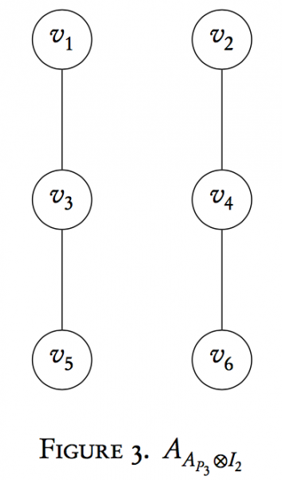
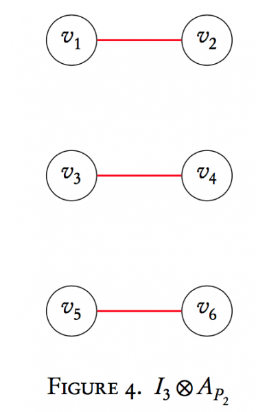
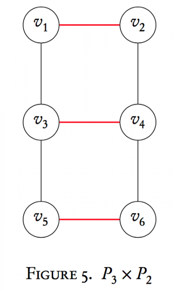
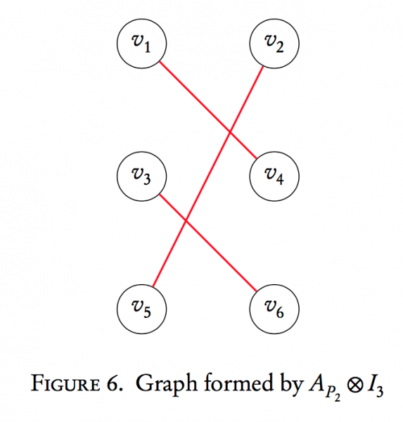
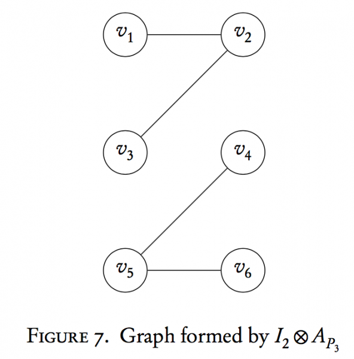
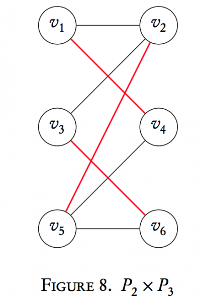
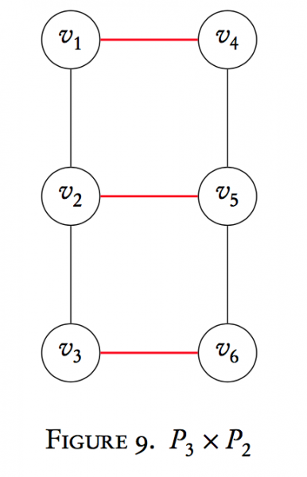

Graphs are objects like any other, mathematically speaking. We can define operations on two graphs to make a new graph. We'll focus in particular on a type of graph product- the Cartesian product, and its elegant connection with matrix operations.
We mathematically define a graph $G$ to be a set of vertices coupled with a set of edges that connect those vertices. We write $G = (V_{G}, E_{G})$. As an example, the left graph in Figure 1 has three vertices $V_{G} = \{v_{1}, v_{2}, v_{3}\}$, and two edges $E_{G} = \{v_{1}v_{2}, v_{2}v_{3}\}$. The orderof $G$ is the number of vertices, and the sizeof $G$ is the number of edges. So our graph $G$ has order $n=3$ and size $m=2$. This graph in particular has a special name, $P_{3}$, because it's a special type of graph called a paththat consists of 3 vertices. Two vertices that are connected by an edge areadjacentand denoted with the symbol $\sim$.
Now that we've dispensed with necessary terminology, we shall turn our attention to performing operations on two graphs to make a new graph. In particular, a type of graph multiplication called the Cartesian product. Suppose we have two graphs, $G$ and $H$, with orders $n_{G}$ and $n_{H}$ respectively. Formally, we define the Cartesian product $G \times H$ to be the graph with vertex set $V_{G} \times V_{H}$. Pause here to note what we mean by this. The vertex set of the graph is the Cartesian product of the vertex sets of the two graphs: $V_{G \times H} = V_{G} \times V_{H}$. This means that the Cartesian product of a graph has $n_{G}n_{H}$ vertices. As an example, $P_{3} \times P_{2}$ has $3\cdot 2 = 6$ vertices. The vertices of $G \times H$ are ordered pairs formed by $V_{G}$ and $V_{H}$. For $P_{3} \times P_{2}$ we have, $$V_{P_{3} \times P_{2}} = \{(v_{1}, x_{1}),(v_{1}, x_{2}),(v_{2}, x_{1}),(v_{2}, x_{2}), (v_{3}, x_{1}),(v_{1}, x_{2}) \}$$ The edge set of $G \times H$ is defined as follows: $(v_{i}, x_{k})$ is adjacent to $(v_{j}, x_{l})$ if
We can also operate on graphs using matrices. The pictures above are one way to represent a graph. An adjacency matrix is another. The adjacency matrix$A_{G}$ of a graph $G$ of order $n$ is an $n \times n$ square matrix whose entries $a_{ij}$ are given by $$a_{ij} = \begin{cases} 1, & v_{i} \sim v_{j} \\0, & i=j \text{ or } v_{i} \not\sim v_{j}\end{cases}.$$ The adjacency matrix for $P_{3}$ and $P_{2}$ respectively are $$A_{P_{3}} = \begin{bmatrix} 0 & 1 & 0\\ 1 & 0 & 1\\0 & 1 & 0\end{bmatrix} \qquad A_{P_{2}} = \begin{bmatrix} 0 & 1\\1 & 0\end{bmatrix}$$ Note that a relabeling of vertices simply permutes the rows and columns of the adjacency matrix.
What is the adjacency matrix of $G \times H$? If $G$ and $H$ have orders $n_{G}$ and $n_{H}$ respectively, we can show that $$A_{G \times H} = A_{G} \otimes I_{n_{H}} + I_{n_{G}} \otimes A_{H}$$ where $\otimes$ is the Kronecker product, and $I_{m}$ is the $m\times m$ identity matrix. Recall that the Kronecker product of two matrices $A_{m \times n} \otimes B_{k \times l}$ is the $mk \times nl$ matrix given by $$A \otimes B = \begin{bmatrix} a_{11}B & a_{12}B &\ldots & a_{1n}B \\ a_{21}B & a_{22}B & \ldots & a_{2n}B \\ \vdots & & \ddots& \vdots \\ a_{m1}B & a_{m2}B & \ldots & a_{mn}B\end{bmatrix}$$ In general, the Kronecker product is not commutative, so $A \otimes B \neq B \otimes A$.
We can prove the formula for $A_{G \times H}$ above using standard matrix theory, but this really wouldn't be that illuminating. We'd see that the statement is indeed true, but we would gain very little insight into how this affects the graph and why. We shall break apart the formula to see why the Kronecker product is needed, and what the addition is doing.
Let us return to finding $P_{3} \times P_{2}$. By our formula, $A_{P_{3} \times P_{2}} = A_{P_{3}} \otimes I_{2} + I_{3} \otimes A_{P_{2}}$. Notice first why the dimensions of the identity matrices "cross" each other; that is, we use the identity matrix of order $n_{P_{2}}$ in the Kronecker product with $A_{P_{3}}$ and vice versa $n_{P_{3}}$ for $A_{P_{2}}$. This ensures we get the correct dimension for the adjacency matrix of $P_{3} \times P_{2}$, which is $6 \times 6$.
We'll walk through the computation one term at a time. First, $$\begin{aligned}A_{P_{3}} \otimes I_{2} &= \begin{bmatrix} 0 & 1 & 0\\ 1 & 0 & 1\\0 & 1 & 0\\\end{bmatrix} \otimes \begin{bmatrix} 1 & 0\\0 & 1\end{bmatrix} \\&= \begin{bmatrix} 0 & 0 & 1 & 0 & 0 & 0 \\ 0 & 0 & 0 & 1 & 0 & 0\\ 1 & 0 & 0 & 0 & 1 & 0\\ 0 & 1 & 0 & 0 & 0 & 1\\ 0 & 0 & 1 & 0 & 0 & 0 \\ 0 & 0 & 0 & 1 & 0 & 0\\\end{bmatrix}\end{aligned}$$ This matrix is the adjacency matrix of a 6-vertex graph given below:  Notice that we now have two copies of $P_{3}$ now in one graph. Similarly, $I_{3} \otimes A_{P_{2}}$ is $$\begin{aligned}I_{3} \otimes A_{P_{2}} &= \begin{bmatrix} 0 & 1 & 0 & 0 & 0 & 0 \\ 1 & 0 & 0 & 0 & 0 & 0 \\0 & 0 & 0 & 1 & 0 & 0 \\ 0 & 0 & 1 & 0 & 0 & 0 \\ 0 & 0 & 0 & 0 & 0 & 1\\ 0 & 0 & 0 & 0 & 1 & 0\end{bmatrix}\end{aligned}$$ 
Here the second Kronecker product term has made three copies of $P_{2}$. The last step is to add these two matrices together to obtain the adjacency matrix for $P_{3} \times P_{2}$. Graphically, what's happening? This addition term overlays our 3 copies of $P_{2}$ (usually written $3P_{2}$ or $P_{2} \cup P_{2} \cup P_{2}$) onto the respectively labeled vertices of our two copies of $P_{3}$ (written $2P_{3}$ or $P_{3} \cup P_{3}$). That is, $$\begin{aligned}A_{P_{3} \times P_{2}} &= A_{P_{3}} \otimes I_{2} + I_{3} \otimes A_{P_{2}}\\&= \begin{bmatrix} 0 & 1 & 1 & 0 & 0 & 0 \\ 1 & 0 & 0 & 1 & 0 & 0 \\1 & 0 & 0 & 1 & 1 & 0 \\ 0 & 1 & 1 & 0 & 0 & 1 \\ 0 & 0 & 1 & 0 & 0 & 1\\ 0 & 0 & 0 & 1 & 1 & 0\end{bmatrix}\end{aligned}$$ which is the adjacency matrix of our originally obtained graph 
Note that here the vertex labels aren't ordered pairs. That's ok. Technically we shouldn't have labeled the vertices of the two graphs identically, but the goal was to illustrate the action of the Cartesian product. We can always relabel the edges. Formally, the overlaying of $3P_{2}$ onto the vertices of $2P_{3}$ would be forming those ordered-pair vertices.
A natural question for any operation is whether or not it possesses the property of commutativity. An operation is commutative if the order in which we take it produces the same result. That is, if $\square$ is an operation, $a\square b = b\square a$.
Does $G \times H$ yield the same graph as $H \times G$? In a way, yes. Let's examine what happens if we switch the order of the graph Cartesian product and take $P_{2} \times P_{3}$.
We won't go quite as thoroughly through each step, and instead give the results.
We know the adjacency matrix of $P_{2} \times P_{3}$ is given by $$A_{P_{2} \times P_{3}} = A_{P_{2}} \otimes I_{3} + I_{2} \otimes A_{P_{3}}$$ $$\begin{aligned}A_{P_{2}} \otimes I_{3} &= \begin{bmatrix}0 & 0 & 0 & 1 & 0 & 0\\0 & 0 & 0 & 0 & 1 & 0 \\ 0 & 0 & 0 & 0 & 0 & 1\\ 1 & 0 & 0 & 0 & 0 & 0\\ 0 & 1 & 0 & 0 & 0 & 0 \\ 0 & 0 & 1 & 0 & 0 & 0\end{bmatrix}\end{aligned}$$ Notice again we have 3 copies of $P_{2}$, but the labeling and drawing is now different. If we create a mapping $\phi$ that relabels $v_{4}$ as $v_{2}$, $v_{6}$ as $v_{4}$, and $v_{2}$ as $v_{6}$, then we'd get back the graph we drew from the adjacency matrix formed by $I_{3} \otimes A_{P_{2}}$. Thus, the two graphs are structurally equivalent; it just looks different due to labeling and redrawing. The mapping $\phi$ is called an isomorphismbecause it transforms one graph into the other without losing any structural properties, and the two graphs are isomorphic.
This implies that $A_{P_{2}} \otimes I_{3} \neq I_{3} \otimes A_{P_{2}}$, but if we permute rows and columns, we can transform one matrix into the other. If the labelings on the vertices didn't matter, then the operation is commutative up to isomorphism. If the labelings matter (more common in engineering), then we do not get the "same" graph by switching the order of the Kronecker product.
We'll do the same thing and examine $I_{2} \otimes A_{P_{3}}$ and compare it to $A_{P_{3}}\otimes I_{2}$: $$\begin{aligned}I_{2} \otimes A_{P_{3}} &= \begin{bmatrix}0 & 1 & 0 & 0 & 0 & 0\\1 & 0 & 1 & 0 & 0 & 0 \\ 0 & 1 & 0 & 0 & 0 & 0\\ 0 & 0 & 0 & 0 & 1 & 0\\ 0 & 0 & 0 & 1 & 0 & 1 \\ 0 & 0 & 0 & 0 & 1 & 0\end{bmatrix}\end{aligned}$$ The corresponding graph is  Notice again that here we have two copies of $P_{3}$ just as when we created the graph formed by the matrix $A_{P_{3}}\otimes I_{2}$, but the labels are again permuted. We have generated an isomorphic graph.
Finally, we add the two matrices together (or follow the definition to create the last step of the Cartesian product by overlaying vertices and fusing them together). $$\begin{aligned}A_{P_{2}} \otimes I_{3} + I_{2} \otimes A_{P_{3}} &= \begin{bmatrix}0 & 1 & 0 & 1 & 0 & 0\\1 & 0 & 1 & 0 & 1 & 0 \\ 0 & 1 & 0 & 0 & 0 & 1\\ 1 & 0 & 0 & 0 & 1 & 0\\ 0 & 1 & 0 & 1 & 0 & 1 \\ 0 & 0 & 1 & 0 & 1 & 0 \end{bmatrix}\end{aligned}$$  This is isomorphic to $P_{3} \times P_{2}$. We can show this by finding a mapping $\phi$ that "untangles" $P_{2} \times P_{3}$ by relabeling vertices. We can also redraw the ladder structure we saw with $P_{3} \times P_{2}$ and label the vertices so that we get the structure of $P_{2} \times P_{3}$
Our conclusion is that the graph Cartesian product is "sort of" commutative as an operation. If the vertices were unlabeled or didn't matter, then the operation is commutative because we can always relabel vertices or "untangle" the structure. If the vertices are labeled and matter, then we don't get the same graph back when we switch the order in the Cartesian product. Thus, we can say that the graph Cartesian product is commutativeto isomorphism.
Given an adjacency matrix, can we decompose it into a Cartesian product of two graphs?